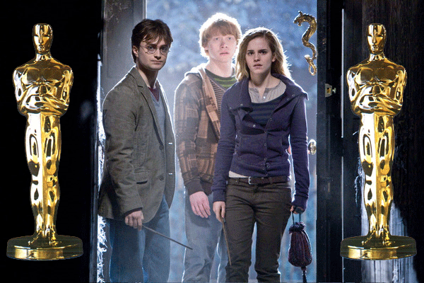
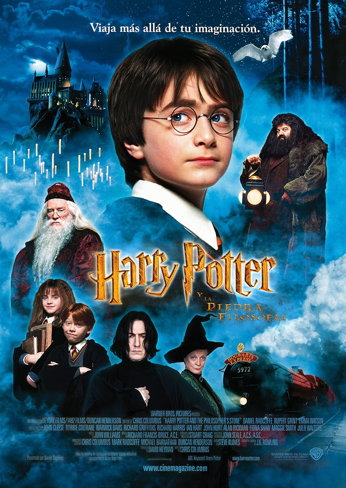
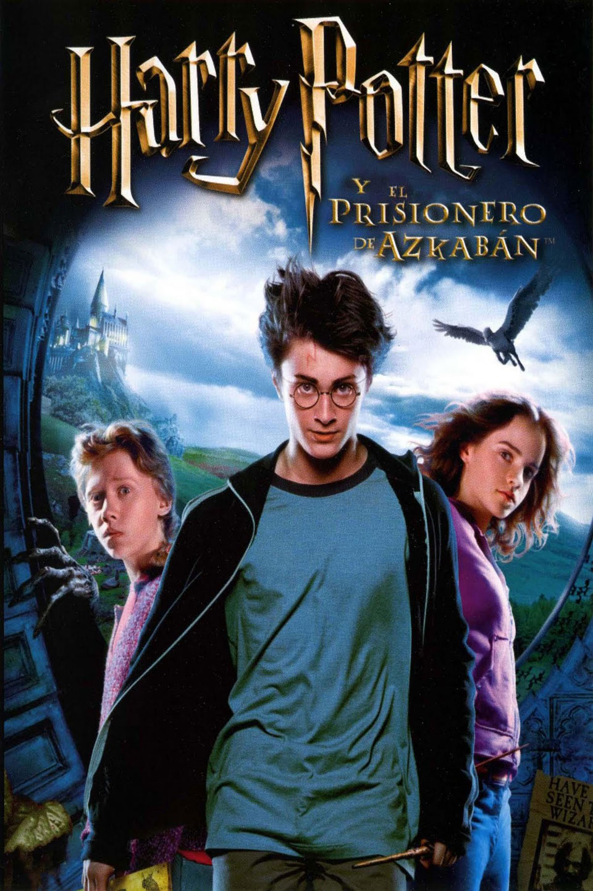
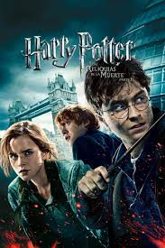
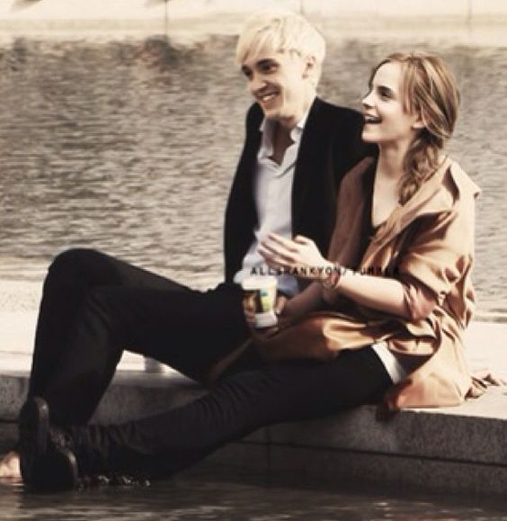
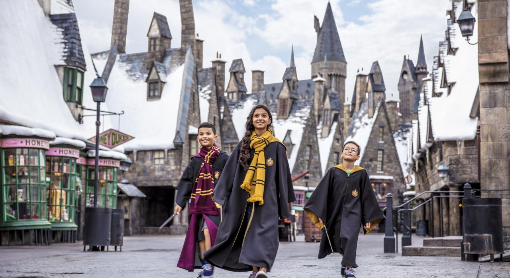
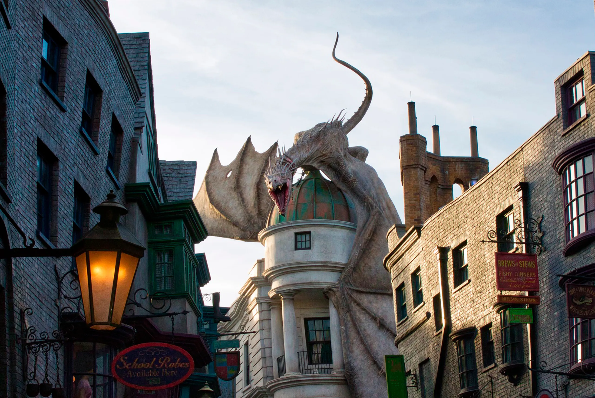

Curiosidades y Premios
Premios
Premios Oscar
- Harry Potter y la piedra filosofal
- Mejor dirección de arte
- Mejor diseño de vestuario
- Mejor banda sonora (John Williams)

-
Harry Potter y el prisionero de Azkaban
- Mejor banda sonora
- Mejores efectos visuales

-
Harry Potter y las Reliquias de la Muerte:
- Mejores efectos visuales
- Mejor maquillaje
- Mejor dirección de arte

¡Curiosidades que tal vez no sabias de Harry Potter!
Neville pudo ser Potter
Es cierto que en las películas no se hace mención a esta posibilidad que pudo ser y no fue en el pasado, pero así es. El bueno de Neville Longbotton pudo ocupar el sitio de Harry Potter como protagonista de los hechos.
Se trata de una profecía que contaba que el hijo de aquellos que se enfrentaron al señor tenebroso en 3 ocasiones y nacido en julio sería aquel que pusiera fin a su existencia. Unas características que se daban en ambos, pero que terminó decantándose por nuestro querido Harry al ser mestizo, como el propio Voldemort.

Harry y J.K. Rowling comparten cumpleaños
La autora de la saga nació el 31 de julio de 1965 en Yate (Inglaterra), 15 años antes que su personaje más famoso. Pese a que es conocida por sus iniciales J.K., su nombre real es Joanne Rowling y no tiene segundo nombre. Antes de estrenar su primera novela, la editorial Bloomsbury que publicó sus libros en inglés en el Reino Unido le pidió que utilizara dos iniciales y no su nombre de pila. Al no tener segundo nombre, eligió la letra K en honor a su abuela paterna Kathleen.
Draco Malfoy y Hermione
sentía un enamoramiento por Felton cuando era más pequeña, especialmente en los dos primeros años de las películas. “Él lo sabe, lo hablamos y todavía nos reímos de eso. Ahora somos muy buenos amigos, y creo que es genial”, explicaba Watson.
Todos los actores debían ser británicos
Uno de los requisitos que pedía la autora, J.K. Rowlin g, era que todos los actores que participaban en la película debían ser británicos. ¿La razón? Ella quería que todo el elenco perteneciera al mismo país de origen. Por eso, no podían traer a otros actores de otras nacionalidades.
Parque de Atracciones en Orlando
La atracción de Harry Potter de Universal Orlando se distribuye en dos parques del complejo: Diagon Alley en el lado de Universal Studios Florida y Hogsmeade en Universal's Islands of Adventure. Los dos están conectados por el tren Hogwarts Express, y cada uno cuenta con tiendas, restaurantes y atracciones inspiradas en el joven mago.
Por otro lado, en Diagon Alley, la experiencia es aún más detallada. El ingreso es secreto, como en las películas, y al entrar ves fachadas de tiendas como Ollivanders
Además del entretenimiento, el parque ha tenido un impacto cultural enorme. Ha revitalizado el interés por la saga, atrayendo nuevas generaciones y manteniendo vivo el mundo mágico. Para muchos, visitar este parque no es solo una atracción turística, sino una forma de cumplir un sueño de infancia.
El nivel de detalle en cada rincón es impresionante. Desde los sonidos ambientales hasta los cuadros parlantes, pasando por los baños con la voz de Myrtle la Llorona, todo está diseñado para que sientas que realmente estás en el universo de Harry Potter. La ambientación, los actores caracterizados, la música y los efectos hacen que sea uno de los parques temáticos más celebrados del mundo, tanto por fans como por quienes no son tan seguidores.
